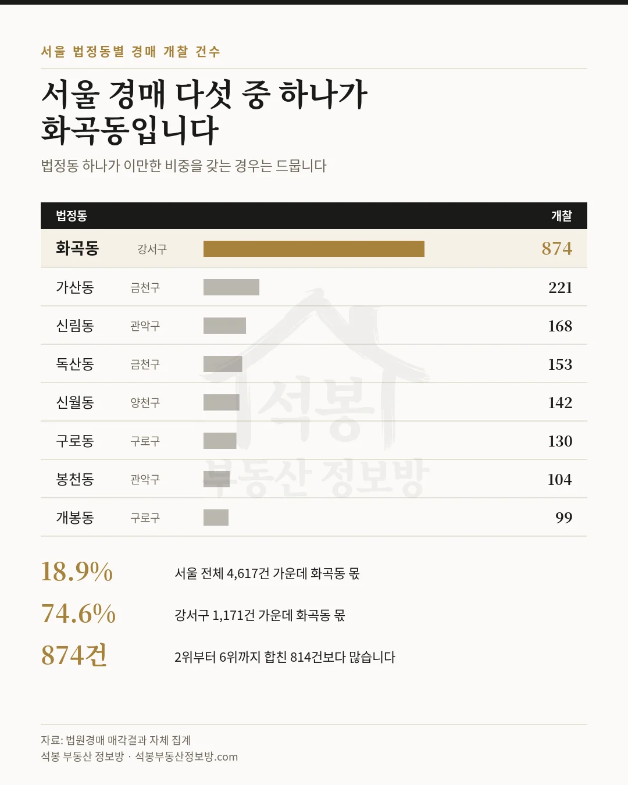
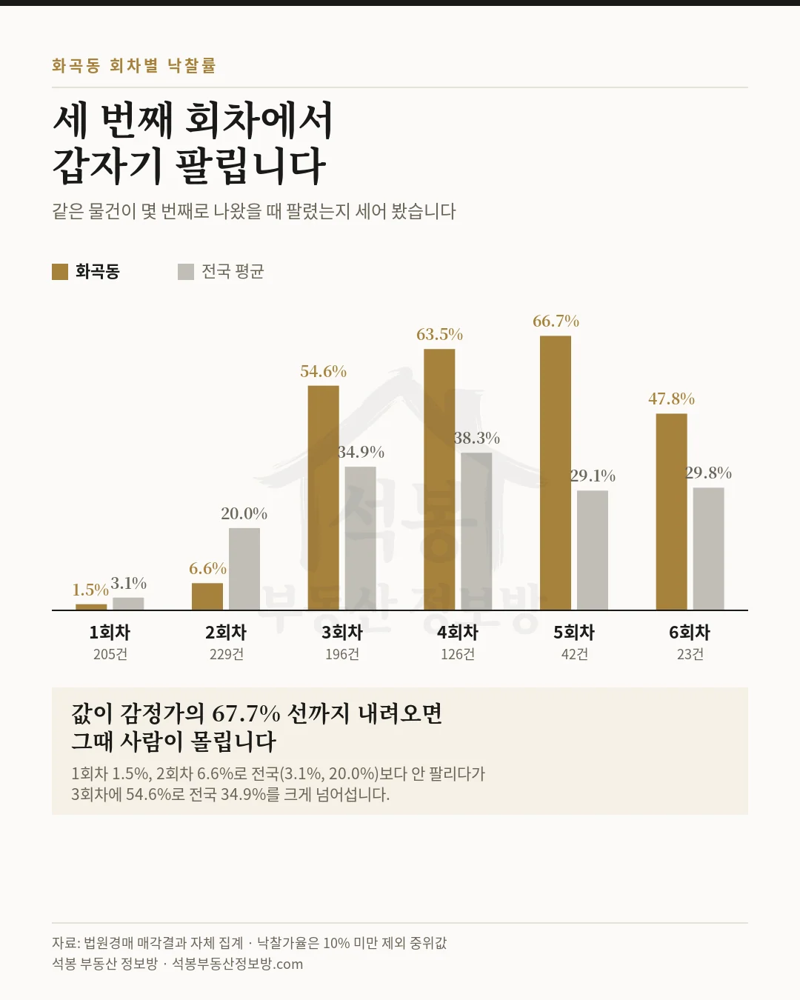
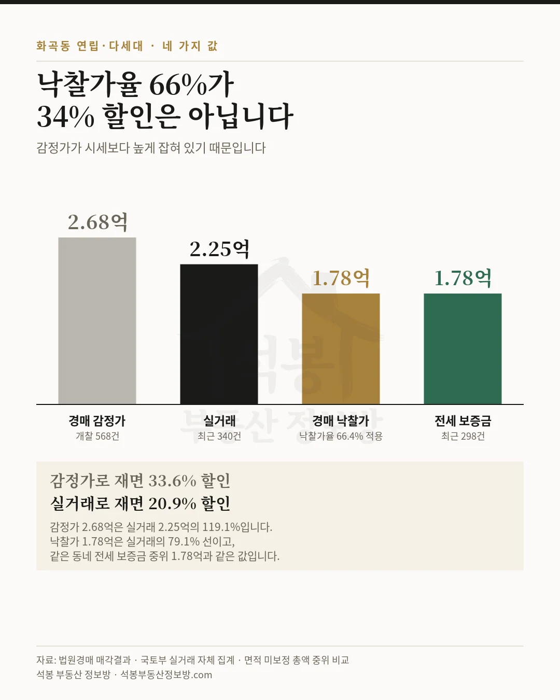

동네 하나를 골라 그 안의 경매와 공매를 통째로 들여다보는 시리즈를 시작합니다. 첫 회는 서울 강서구 화곡동입니다. 2026년 7월 14일부터 8월 14일까지 한 달 동안 전국에서 열린 부동산 경매 개찰이 33,345건인데, 그중 874건이 화곡동 한 곳에서 나왔습니다. 서울 전체의 18.9%입니다. 서울에서 경매로 나온 물건 다섯 개 중 하나가 이 동네라는 뜻입니다.
누르면 그 지역 실거래가 지도에서 바로 열립니다. 입찰가를 정할 때 감정가보다 먼저 봐야 할 자료입니다.
서울 1위와 2위의 차이가 네 배입니다
서울 법정동을 경매 개찰 건수로 줄 세워 봤습니다.
순위
법정동
개찰
서울 비중
1
화곡동 강서구
874
18.9%
2
가산동 금천구
221
4.8%
3
신림동 관악구
168
3.6%
4
독산동 금천구
153
3.3%
5
신월동 양천구
142
3.1%
6
구로동 구로구
130
2.8%
같은 기간 서울 전체 경매가 4,617건인데, 화곡동 874건은 2위부터 6위까지를 다 합친 814건보다 많습니다. 강서구 전체 경매가 1,171건인데 그중 74.6%가 이 동네 하나에서 나왔습니다. 전국으로 넓혀도 2.6%를 차지합니다. 법정동 하나가 이 정도 비중을 갖는 경우는 흔치 않습니다.

서울 동별 순위 카드
여기서부터는 회원에게 보여드립니다
카카오 로그인 3초면 전문을 읽을 수 있습니다. 무료입니다.
가입하시면 지역 시장조사 보고서(약식)를 2회 무료로 요청하실 수 있습니다.
이미 회원이면 같은 버튼으로 로그인만 됩니다
무엇이 나와 있나
874건을 종류별로 갈랐습니다.
종류
개찰
낙찰
낙찰률
낙찰가율 중위
감정가 중위
연립·다세대
568
150
26.4%
66.4%
2.68억
오피스텔
244
80
32.8%
59.0%
2.81억
아파트
33
13
39.4%
66.4%
2.41억
상가·업무
19
5
26.3%
67.7%
1.85억
열에 여섯이 연립·다세대이고 오피스텔까지 더하면 93%입니다. 아파트는 33건뿐입니다. 화곡동 경매를 이야기할 때 아파트 낙찰가율을 들고 오면 그 동네를 설명하지 못한다는 뜻입니다. 전국 경매에서 연립·다세대 비중이 21%인 것과 비교하면 이 동네가 얼마나 한쪽으로 쏠려 있는지 보입니다.
건물 단위로 묶으면 한 곳에서 여러 건이 몰려 나온 경우가 보입니다. 오피스텔 더프라임이 53건으로 가장 많았고 그중 34건이 팔렸습니다. 더숨153은 22건 중 3건, 라피아노는 17건 중 1건만 팔렸습니다. 같은 건물에서 수십 호실이 동시에 나오면 낙찰받은 뒤에도 되팔거나 세를 놓을 때 옆방과 경쟁하게 됩니다.
세 번째 회차에서 갑자기 팔립니다
화곡동 경매에서 가장 뚜렷한 특징이 이것입니다. 같은 물건이 몇 번째로 나왔을 때 팔렸는지를 전국 평균과 나란히 놓아 봤습니다.
회차
화곡동 개찰
화곡동 낙찰률
전국 낙찰률
화곡동 낙찰가율 중위
1회차
205
1.5%
3.1%
111.4%
2회차
229
6.6%
20.0%
85.1%
3회차
196
54.6%
34.9%
67.7%
4회차
126
63.5%
38.3%
53.7%
5회차
42
66.7%
29.1%
51.3%
첫 두 회차는 전국 평균보다도 안 팔립니다. 2회차 낙찰률이 6.6%로 전국 20.0%의 3분의 1입니다. 그런데 3회차에서 54.6%로 뒤집힙니다. 전국 34.9%를 크게 넘어섭니다. 4회차 63.5%, 5회차 66.7%로 더 올라갑니다.
읽는 방법은 이렇습니다. 화곡동 물건은 감정가 근처에서는 아무도 안 사고, 감정가의 68% 선까지 내려오면 그때 사람이 몰립니다. 응찰자들이 이 동네 가격대를 정확히 알고 기다린다는 뜻입니다. 값이 그 선에 닿는 순간 경쟁이 붙습니다.

회차별 낙찰률 카드
낙찰가율 66%가 곧 34% 싸다는 뜻은 아닙니다
여기서 한 겹 더 들어가겠습니다. 화곡동 연립·다세대 낙찰가율 중위가 66.4%입니다. 감정가의 3분의 2에 샀으니 34% 할인처럼 들립니다. 그런데 감정가가 시세와 같다는 전제가 맞아야 그 말이 성립합니다.
같은 동네 같은 종류의 최근 실거래를 붙여 봤습니다.
구분
금액(중위)
근거
경매 감정가
2.68억
개찰 568건
실거래
2.25억
최근 340건, 전용 중위 42.8㎡(12.9평)
경매 낙찰가
1.78억
감정가 중위에 낙찰가율 66.4%를 적용
전세 보증금
1.78억
최근 전세 298건
감정가 2.68억은 실거래 2.25억의 119.1%입니다. 감정가 자체가 시세보다 높게 잡혀 있습니다. 그래서 낙찰가 1.78억은 실거래의 79.1%가 됩니다. 감정가로 재면 33.6% 할인이지만 실거래로 재면 20.9% 할인입니다. 절반 넘게 줄어듭니다.
그리고 눈여겨볼 것이 하나 더 있습니다. 이 동네 연립·다세대 전세 보증금 중위가 1.78억으로 낙찰가와 거의 같습니다. 낙찰가가 전세보증금 수준이라는 것은, 선순위 임차인이 있는 물건이라면 낙찰자가 떠안을 금액과 낙찰가가 맞먹을 수 있다는 뜻입니다. 권리분석을 건너뛰면 안 되는 이유가 여기 있습니다.

네 가지 값 비교 카드
공매에도 화곡동이 있습니다
온비드 공매로 눈을 돌리면 화곡동 물건이 167건 쌓여 있습니다. 개찰 이력을 따라가 보니 주인을 찾은 것은 11건, 6.6%입니다. 같은 동네 경매 낙찰률 28.8%의 4분의 1도 안 됩니다.
공매가 유독 안 팔리는 이유는 명도에 있습니다. 경매 낙찰자는 인도명령을 신청해 강제집행으로 점유자를 내보낼 수 있지만, 공매 낙찰자에게는 그 길이 없어 명도소송을 따로 걸어야 합니다. 세입자가 얽힌 물건이 많은 동네에서는 이 차이가 특히 크게 작용합니다.
화곡동 물건을 볼 때 확인할 것
첫째, 1회차와 2회차는 기다리는 구간입니다. 이 동네에서 그 회차에 팔린 비율은 1.5%와 6.6%입니다. 그때 응찰한 사람들의 낙찰가율 중위는 111.4%와 85.1%로 높습니다. 급하게 들어가면 비싸게 삽니다.
둘째, 기준은 감정가가 아니라 실거래입니다. 이 동네 감정가는 실거래보다 19% 높게 잡혀 있었습니다. 위에 걸어 둔 화곡동 연립·다세대 지도에서 비슷한 조건의 최근 거래를 먼저 확인하고 거기서 역산하십시오.
셋째, 같은 건물에서 몇 건이 나왔는지 세어 보십시오. 더프라임처럼 한 건물에서 50건 넘게 나온 곳이 있습니다. 낙찰받은 뒤 되팔거나 세를 놓을 때 상대가 옆방이 됩니다.
넷째, 선순위 임차인 여부를 반드시 확인하십시오. 낙찰가와 전세 보증금 중위가 같은 동네입니다. 매각물건명세서에서 인수할 권리가 있는지 보지 않으면 계산이 통째로 어긋납니다.
한 줄 요약
화곡동 경매 개찰 874건은 서울 전체의 18.9%이고 2위부터 6위까지를 합친 것보다 많습니다. 열에 여섯이 연립·다세대입니다. 1~2회차에는 거의 안 팔리다가 3회차 54.6%로 뒤집히는데, 그 지점이 감정가의 68% 선입니다. 낙찰가 중위 1.78억은 실거래 2.25억의 79.1%이고, 같은 동네 전세 보증금 중위와 같은 값입니다. 공매는 167건 중 11건만 팔렸습니다.
다음 회에는 서울 2위 금천구 가산동을 다룹니다. 화곡동이 연립·다세대의 동네라면 가산동은 상가와 오피스가 절반인 동네라 결과가 어떻게 달라지는지 같은 잣대로 보겠습니다.
원자료: 법원경매 매각결과 공개자료(매각기일 2026년 7월 14일 ~ 8월 14일, 화곡동 부동산 개찰 874건) · 국토부 실거래(2026년 6월 ~ 8월 신고분, 연립·다세대 매매 340건·전세 298건) · 온비드 공매(개찰 2025년 7월 ~ 2026년 8월, 화곡동 167건) · 석봉 부동산 정보방 자체 집계 · 기준일 2026년 8월 18일 낙찰률은 그 회차에 팔린 비율이고, 낙찰가율은 지분 매각으로 추정되는 10% 미만을 뺀 중위값입니다. 경매 자료에 면적이 없어 감정가·낙찰가와 실거래 비교는 면적을 맞추지 못한 총액 중위 비교입니다. 참고치로만 보십시오. 경매는 법원이 현행 목록만 공개해 과거 소급이 되지 않으므로 이 글의 경매 수치는 한 달 단면이며 월별 추이로 읽으시면 안 됩니다. 편집·제작: 석봉 부동산 정보방 · 개별 물건의 권리관계나 투자 가치를 보증하지 않으며, 본 자료는 정보 제공 목적이고 투자 권유가 아닙니다.